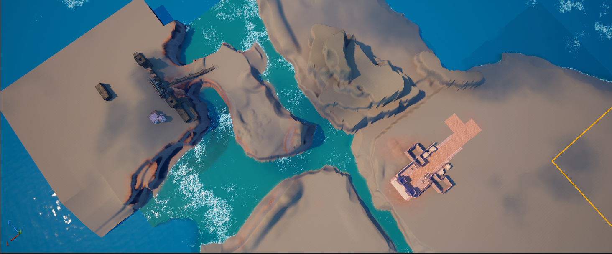
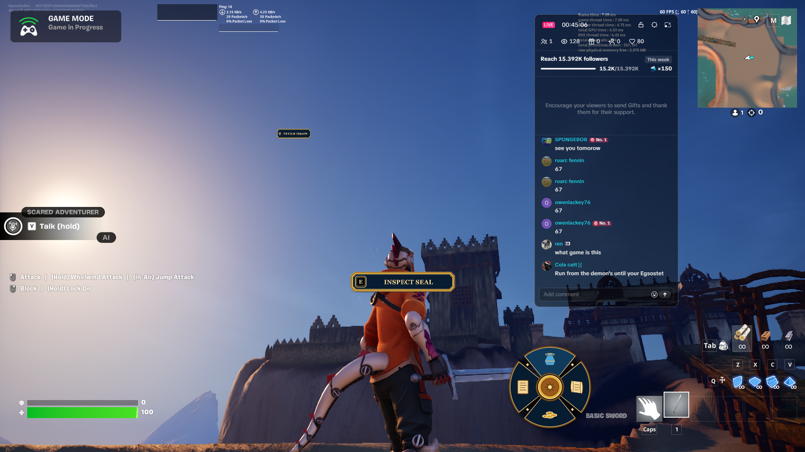
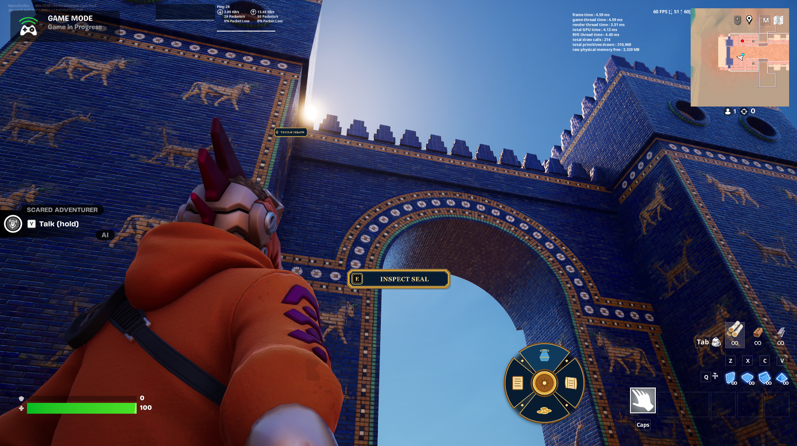
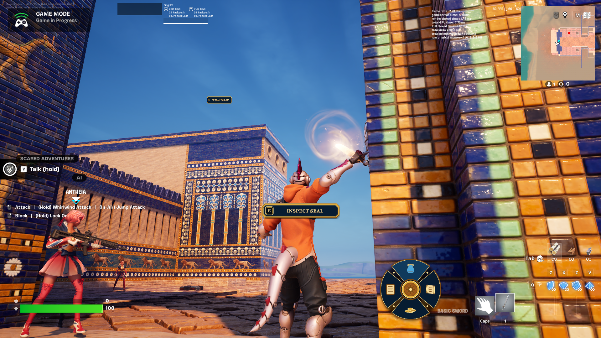

WORLD //
Map-scale terrain and water composition.
New game // 2026Bazoo Studios LLC
This page is the home base for the new Bazoo Studios game. It is set up for the official synopsis, screenshots, trailer embeds, platform details, and launch links as the project becomes ready to show.
Game overview

Map-scale terrain and water composition.

In-game prompt and player interaction moment.

Gate framing shot for the main entrance.

Mosaic material and trim close-up.
Use this card for the game’s short pitch, premise, and tone. It is intentionally broad so you can drop in the final narrative without changing the page structure.
When you have gameplay capture, this section can hold the trailer embed, stills, or a link to a playable demo.
Add platform targets, store links, or release timing here. Until then, it works as a clean placeholder with the same visual language as the rest of the site.
Slideshow gallery
Use the arrows or thumbnails to flip through the current screenshots. This is set up as a simple slideshow so you can swap images later without rebuilding the page.
Note The URL should now publish at /LostSealGame/ because this is a real folder with an `index.html` file, which GitHub Pages serves directly.
Keep building
Use the portfolio for the full project list, or return home to keep moving through the studio site.